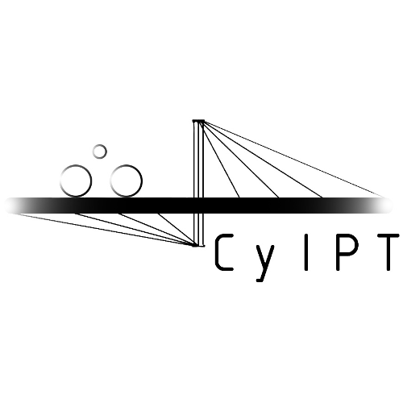

6 Discussion and next steps
A number of innovations have been developed for CyIPT and, from the results of the workshop, it seems that there is high demand for them among practitioners. CyIPT has demonstrated that it is possible to automate the first stage of the planning process for cycling, enabling planners to focus their skills where they are most needed: in evaluating the technical and economic feasibility of schemes that are known to make sense based on some of the best available data. CyIPT works nationally and includes a wide range of data sources, but it should not be seen as a finished product.
This section discusses some limitations of CyIPT after this initial Phase I. This discussion feeds directly into the identification of areas in which there is great potential for further development of the tool. The next steps for CyIPT can be taken in a range of directions, but they should be informed by an honest appraisal of the limitations of the project (and modelling overall) for planning for cycling and an understanding of the resource requirements for different directions of travel in terms of time and public investment in decision-making tools.
An important aspect of CyIPT Phase I is that recommendations are based on existing levels of cycling (or rather cycle commuting along the fastest route in 2011). For this reason, the results of CyIPT can be seen as the network that cities should already have for a given level of cycling, accounting only for commuter cycling. This suggests that adding new cycling potential layers such as cycle-to-school (e.g. made available by PCT Phase III) and new scenarios moving beyond existing levels of cycling as next steps.
6.1 Outline of a proposal for Phase II
In Phase I, we demonstrated the advantages of a single nationwide map layer that allows transport decisions to be made at any geographic scale, without having to first select the ‘region’ in which work is planned to take place as the PCT requires: often strategic cycling plans cover multiple regions. This allows transport planning to reflect local travel patterns rather than being constrained by administrative or funding boundaries.
Furthermore, the CyIPT demonstrates the benefits of showing multiple data inputs overlaid on a single map. The PCT focusses attention on the potential for cycling uptake but we have learned that decision-makers require more data than current and possible future cycling behaviour. They also require:
- Information about likely costs of new infrastructure options (included in Phase I)
- Estimates cycling uptake and benefits resulting from new schemes (included in Phase I)
- Data on road widths, which can provide vital intelligence on where cycling infrastructure will be least disruptive (included in Phase I)
- Data on the location of cycling collision hotspots so decision-makers can prioritise investment to make cycling safe (included in Phase I)
Additional data layers could be added to this list. The first priority of Phase II is to ensure the value of the project is captured and secure its future in a way that is accessible to transport planners (currently https://www.cyipt.bike is password-protected so of limited use to transport planners and members of the public who could potentially benefit from the tool). However, the CyIPT is only a prototype and there is a wide range of ways it could be improved and expanded.
The document outlines both core improvements required to convert the CyIPT from a prototype to a useable public service and a selection of possible additional work that would either improve existing functionality or add new functionality.
6.2 Core Improvements
CyIPT was funded as an Innovation project and therefore was not designed to be used in production in the same way the PCT was. For CyIPT to be a full service it would likely require around 120 days (more if it includes training) from the CyIPT team:
- c1. Refine Uptake Model (20 days)
- c2. Refine Benefits Calculation (20 days)
- c3. Refine Costs Calculation (20 days)
- c4. Further enhancements of User Interface (20 days)
- c5. Update manual, testing with stakeholders in a workshop and refinement (15 days)
- c6. Full GDS compliance (10 days)
- c7. Deployment on a public-facing website (5 days)
This work will allow the value already generated by the £90k CyIPT project to be captured in a way that allows Local Authorities to benefit from it in the long-term. This represents the baseline or ‘stage 1’ of follow-on project building on the work already done with CyIPT.
At an estimated daily rate of £500/day this would cost around £60k. We would suggest that server hosting and maintenance costs of around £5k/year would be included in this project to ensure the resources are available in the future, for 3 years for example. We believe that if we front-load the work represented in c1 to c7 a publicly-accessible version of CyIPT could be complete within 6 months of commencing the project and potentially earlier. Our ability to deploy Big Data projects is illustrated by the fact that we already have deployed a prototype of CyIPT nationwide.
We would also recommend the launch of a new public service should include training events and materials, including a forum where planners can learn from each other to ensure knowledge sharing around CyIPT.
- t1. Create training events and materials (20 - 30 days)
This deployment work will ensure Local Cycling and Walking Plans (LCWIPs) can benefit from the work of CyIPT. Estimated cost: £12k - £17k.
6.3 Optional improvements and New functionality
Beyond the core improvements required for CyIPT, there are a several ways CyIPT could be improved or add new functionality.
6.3.1 Improving the quality of CyIPT results
- q1. Improved cost model, CyIPT is currently based on average cost per km for different types of cycle infrastructure. The model could be enhanced to consider a wider range of factors and thus provide more realistic estimates of the costs of cycle infrastructure. (80 days)
- q2. Improved benefits model, CyIPT does not currently consider all the possible benefits (e.g. reduced air pollution) and uses simplifications and assumptions for other benefits. The development of an enhanced benefits model that was fully compliant with DFT standards would significantly enhance the utility of CyIPT. (80 days)
- q3. Enhanced uptake model, more research and an improved understanding of how new cycle infrastructure changes cycling rates would improve the accuracy of CyIPT predictions (80 days).
These three improvements would collectively cost around £125k, and would make CyIPT into a robust and reliable tool for policymaking.
6.3.2 New functionality
New functionality can be added to CyIPT using the existing data sources that CyIPT has produced.
- n1. Improved collisions analysis, improvements in UI and analysis techniques, including the provision of an estimated level of risk, could allow CyIPT to match and exceed the existing capabilities of services such as crash map. (30 days)
- n2. Additional scenarios of infrastructure change (e.g. ‘government target’) (20 days)
- n3. Assessment of cycling ‘Level of Service’ using the TfL’s Cycling Level of Service (CLoS) metric or similar (40 days)
- n4. The detection and evaluation of missing links (40 days)
If we went for all these options that would come to approximately £65k but we could add and remove options depending on which were in most demand.
6.3.3 New functionality requiring additional data sources
Ultimately, tools like the PCT and CyIPT are about evidence-based decision-making. It is well known and demonstrable that the more information that decision-makers base their decisions on, the better they tend to be. CyIPT moves in the right direction in terms of providing more data to decision-makers but more data sources would greatly benefit the decision-making process, including:
- d1. Data on the provision of cycle parking spaces in relation to estimates of current and future demand (30 days)
- d2. The inclusion of improved traffic data, e.g. HALOGEN (30 days)
- d3. Improved road width data, replace 2005 data with current data and seek permission from OS for publication (30 days)
- d4. Overlay with air pollution data, and localised air pollution analysis (60 days)
- d5. Addition of travel to school data (dependant on PCT Phase III) (30 days)
- d6. Addition of Wales (dependant on PCT Phase III) (20 days)
- d7. Addition of Scotland (40 days)
- d8. The ability to display crowdsourced data on issues with current infrastructure (20 days)
It would be possible to overlay additional data on the map such as datasets relating to road and cycle path quality, the provision of soft policies such as cycle training locally, and new developments. These would be discussed with stakeholders before work begins. Clearly, the ability to display crowd-sourced data depends on having good crowd-sourced data. We could overlay existing data, e.g. from the Cyclescape and CycleStreets photomap projects. However, we believe it would be more beneficial to link in in with a new project to create a user-friendly and accessible ‘Space for Cycling Toolkit’ (a proposal from Cycling UK that was not funded by ICF).
We do not expect all options in the above ‘menu’ would be taken but it is worth considering them and the relative amount of resource required to deliver each (over £200k for d1 - d8, we would expect to prioritise on adding the most important extra data layers).
6.4 Other possibilities
Beyond the options outlined in the previous sections, we have some more ‘blue-skies’ ideas about integrating cycling analysis into broader multi-mode travel analysis and transport models. This would require a full research stage that would take longer to complete than the options outlined above and we are not proposing it as a near-term option but something to consider, e.g. linked-in with the National Transport Model team at DfT.
We could look at the evaluation of infrastructure from a walking perspective. Following discussion at the CyIPT workshop, a promising method to do this would be to integrate the methods underlying the sDNA tool into CyIPT. This would have the advantages of:
- Using a tried-and-tested model for walking accessibility that has been verified using multiple data sources by Crispin Cooper.
- Making use of the existing infrastructure of CyIPT to present results on walking, rather than creating another tool.
For these reasons it seems adding walking evaluation into the existing CyIPT toolkit is an interesting future direction of travel for CyIPT, which could lead to a name change for the project (e.g. to the Cycling and Walking Infrastructure Prioritisation Toolkit, CWIPT).
A future possibility in the longer term, after the successor of CyIPT is secure, would be to integrate CyIPT with existing multi-modal transport models used by transport planning authorities. One question that often comes up is: where would reallocating road space be acceptable from an economic perspective? Thus a wider stage could look at the potential impact of cycling uptake and infrastructure impact on motor traffic, and hence transport-related air pollution. The most ambitious idea is to integrate CyIPT with full multi-modal transport models or to redesign existing transport models based on our experience with the PCT and CyIPT.
These further possibilities would be research-driven, meaning there would be a potential to apply for academic research funding to develop the underlying research, e.g. from the Engineering and Physical Sciences Research Council (EPSRC).
6.5 Summary of next steps
There are many directions in which we can extend the CyIPT and this document outlines some of the most desirable in terms of benefits for the LCWIP process, building on our existing work. The priority is to deploy and refine the existing work so the LCWIP process can benefit from the work already done at the earliest possible stage.
We have already developed details on the break-down of the bullet-points in the previous section, which we can share and refine. At present, however, this represents a solid wish-list of work we would be able to provide in preparation for Phase II of CyIPT that will be of use to the LCWIP process.
During the final months of the CyIPT project and following the successful CyIPT workshop plans for follow-on work are in motion. It seems there is high demand for the type of interactive evidence on infrastructure options provided by CyIPT and there are many options for taking the project forward.
Feedback
CyIPT is a publicly-accessible research project based on open source software, the results of which are available in an online map-based tool at www.cyipt.bike (currently password-protected).
The code underlying CyIPT is hosted on GitHub, a platform for software development and collaboration that also provides and an excellent forum for discussing issues and providing feedback as follows:
- Feedback on CyIPT Results and Methods: github.com/cyipt/cyipt/issues
- Feedback on CyIPT website and user interface: github.com/cyipt/cyipt-website/issues
Hosting the code on GitHub also enables community contributions. If you find any issues on this user manual, for example, suggested changes to the source code are welcome, which requires a GitHub username from github.com.
Alternatively, we welcome your feedback at info@cyipt.bike.
